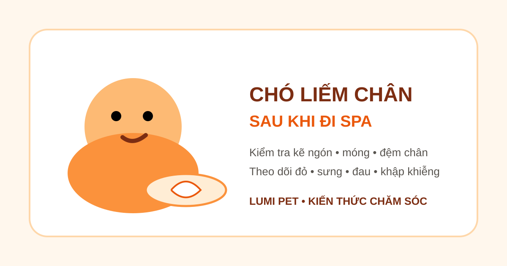

Chó liếm chân sau khi đi Spa: khi nào bình thường, khi nào cần kiểm tra?
Trả lời nhanh: chó liếm chân vài lần sau khi về nhà chưa đủ để kết luận có vấn đề. Điều đáng chú ý là liếm liên tục hoặc khó ngắt, chỉ tập trung vào một chân, kèm đỏ, sưng, nóng, đau, chảy máu, móng nứt/gãy hay đi khập khiễng. Thời điểm xuất hiện sau Spa chỉ là một manh mối; dị ứng, nhiễm trùng, dị vật, đau hoặc vấn đề ở móng cũng có thể gây liếm chân.

Liếm chân sau Spa: điều gì quan trọng nhất?
Đừng chỉ hỏi “bé có liếm hay không”, hãy quan sát tần suất, vị trí và dấu hiệu đi kèm. Liếm ngắn rồi dừng khác với việc chó quay lại cùng một bàn chân liên tục, cắn kẽ ngón, bỏ chơi để liếm hoặc không cho chạm vào chân.
Theo PetMD, liếm/gặm quá mức có thể liên quan đến dị ứng, nhiễm trùng, ký sinh trùng, đau hoặc nguyên nhân hành vi. Các dấu hiệu đáng chú ý gồm đỏ da, rụng lông, tổn thương ướt, dịch, đau và đi khập khiễng. Vì vậy không nên mặc định “vừa Spa xong nên chắc do Spa”.
5 nhóm nguyên nhân có thể khiến chó liếm chân nhiều
1. Kích ứng da hoặc bàn chân còn ẩm
Kẽ ngón là vùng dễ giữ ẩm. Nếu da vốn nhạy cảm, việc liếm có thể bắt đầu khi chân khó chịu. Giữ chân sạch và khô, đồng thời quan sát đỏ da, mùi bất thường hoặc dịch giữa các ngón.
2. Vấn đề ở móng
Móng nứt, gãy hoặc vùng quanh móng đau có thể khiến chó tập trung liếm một chân. PetMD ghi nhận móng gãy thường có thể gây đau, chảy máu, đi khập khiễng và liếm chân quá mức. Nếu thấy máu hoặc móng bất thường, đừng tiếp tục cắt sửa tại nhà khi bé đau và chống đối.
3. Dị vật hoặc tổn thương nhỏ ở đệm chân
Hãy nhìn giữa các ngón và mặt dưới đệm chân dưới ánh sáng tốt. Một vết xước, gai nhỏ hoặc tổn thương có thể khó thấy nếu chỉ nhìn từ trên xuống. Không cố móc sâu một dị vật đang cắm chắc hoặc khiến chó đau.
4. Dị ứng hoặc viêm da đã có từ trước
Liếm chân là biểu hiện thường gặp ở nhiều vấn đề da. Nếu chó vốn hay liếm chân, đỏ kẽ ngón hoặc tái phát theo mùa, lần Spa có thể chỉ trùng thời điểm triệu chứng rõ hơn. Khi đó cần tìm nguyên nhân nền thay vì chỉ đổi dầu tắm.
5. Stress hoặc hành vi tự trấn an
Một số chó có thể tăng hành vi liếm khi căng thẳng. Tuy nhiên, nguyên nhân hành vi chỉ nên được cân nhắc sau khi đã kiểm tra các vấn đề y khoa như đau, ngứa và nhiễm trùng, đặc biệt khi chó chỉ liếm một vị trí cố định.
Checklist 5 phút kiểm tra chân chó tại nhà
Bước 1: Quan sát chó đi lại
Cho bé đi vài bước trên mặt phẳng. Ghi nhận có nhấc chân, bước ngắn, né chịu lực hoặc liếm ngay sau khi đặt chân xuống không.
Bước 2: So sánh bốn bàn chân
So chân đang bị liếm với chân còn lại: màu da, độ sưng, nhiệt, mùi và độ ẩm. Sự khác biệt rõ ở một chân là thông tin hữu ích khi trao đổi với bác sĩ thú y hoặc groomer.
Bước 3: Kiểm tra từng móng
Tìm móng nứt, mẻ, chảy máu, vùng quanh móng đỏ hoặc chó rụt chân khi chạm nhẹ. Không ép giữ nếu bé đau hoặc có nguy cơ cắn.
Bước 4: Nhìn kẽ ngón và đệm chân
Tách lông nhẹ nhàng để tìm đỏ, sưng, vết xước, dịch, vật lạ hoặc vùng ẩm kéo dài. Chụp ảnh rõ để theo dõi thay đổi thay vì chỉ dựa vào trí nhớ.
Bước 5: Ghi lại diễn tiến
Ghi chân nào bị liếm, bắt đầu lúc nào, có cắt móng/grooming bàn chân trong buổi Spa hay không và triệu chứng tăng hay giảm. Video ngắn cũng giúp bác sĩ thú y đánh giá hành vi tốt hơn.
Nên làm gì khi chó cứ liếm chân?
Nếu không thấy vết thương và chó vẫn đi lại bình thường, hãy cho bé nghỉ ở nơi sạch, giữ bàn chân khô và theo dõi. Tránh tự bôi cồn, tinh dầu, thuốc giảm đau của người hoặc kem không dành cho thú cưng. Việc liếm liên tục có thể làm vùng da kích ứng nặng thêm.
Nếu có một vết trầy rất nông, có thể hỏi bác sĩ thú y về cách vệ sinh phù hợp. Với móng chảy máu, tổn thương sâu, dị vật cắm sâu hoặc đau rõ, ưu tiên đánh giá chuyên môn thay vì cố xử lý.
Khi nào nên liên hệ bác sĩ thú y?
Nên liên hệ sớm nếu chó chảy máu, sưng chân, có dịch/mủ, mùi bất thường, đau khi chạm, móng nứt/gãy, đi khập khiễng, không chịu chống chân hoặc liếm dai dẳng đến mức gây đỏ/rụng lông/tổn thương da. PetMD cũng lưu ý viêm da bàn chân có thể trở nên đau và dẫn tới khập khiễng; nguyên nhân rất đa dạng nên điều trị phụ thuộc chẩn đoán.
Nếu có phản ứng toàn thân như khó thở, sưng mặt, yếu đột ngột hoặc tình trạng cấp tính khác, cần tìm chăm sóc thú y khẩn cấp thay vì chờ theo dõi tại nhà.
Lần Spa sau nên bàn giao gì?
Khi đặt lịch Spa, hãy báo trước nếu chó từng nhạy cảm ở chân, sợ cắt móng, có móng từng chấn thương, viêm kẽ ngón hoặc đang điều trị da. Nếu bé có hành vi sợ rõ khi xử lý chân, xem thêm bài chó sợ cắt móng khi grooming.
Với nhu cầu chăm sóc định kỳ, bạn có thể xem dịch vụ Spa thú cưng Bình Thạnh, Grooming chó mèo và bảng giá Spa trước khi đặt lịch.
Câu hỏi thường gặp
Chó liếm chân sau khi đi Spa có phải do cắt móng quá sát?
Không thể kết luận chỉ từ thời điểm xuất hiện. Hãy kiểm tra móng, vùng quanh móng, kẽ ngón và cách chó đi lại. Nếu có chảy máu, đau hoặc móng nứt/gãy, nên liên hệ bác sĩ thú y.
Có nên đeo vòng chống liếm?
Nếu chó đang tự làm tổn thương vùng chân, biện pháp ngăn liếm tạm thời có thể hữu ích trong lúc chờ hướng dẫn chuyên môn. Tuy nhiên, vòng chống liếm không thay thế việc tìm nguyên nhân.
Chó liếm cả bốn chân thì sao?
Khi nhiều chân cùng bị ảnh hưởng, các nguyên nhân như dị ứng, kích ứng hoặc vấn đề da cần được cân nhắc. Nếu kéo dài hoặc có đỏ, sưng, mùi hay dịch, hãy khám thú y.
Bài liên quan
Chó bị ngứa sau khi tắm · Chó sợ cắt móng khi grooming · Chó mệt sau khi đi Spa · Chó đỏ mắt sau khi tắm